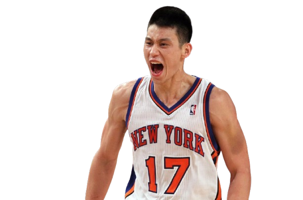
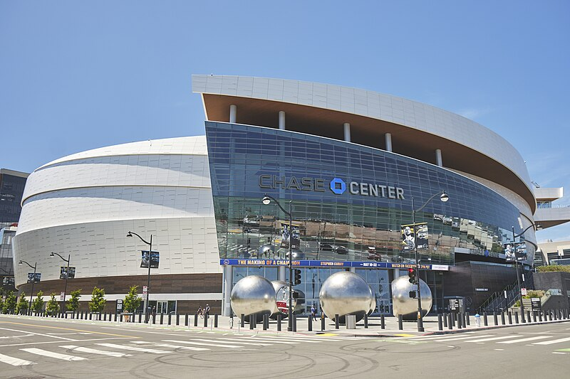
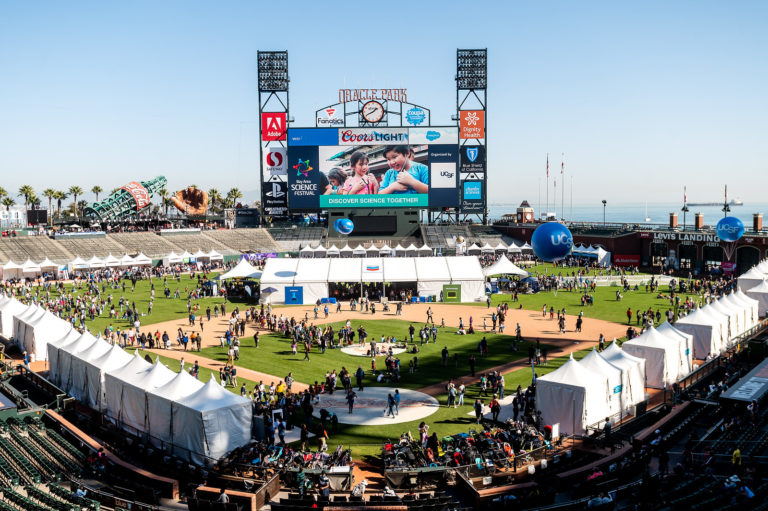

Explore event schedule below! Join us for a 3-day event at the Chase Center, home of the NBA’s Golden State Warriors, and Oracle Park, of the San Francisco Giants.
This event includes guest speaker, different types of sport activities, red carpet, and an awards presentation for Asian Athletes who work hard to inspire others
Day 1: December 8th - Kick-off Event
Kick-off/Opening ceremony
Guest Speaker/Athletes share their journeys & experiences
Location: Chase Center
Time: 2-5 pm

Day 2: December 9th - Skills and Showcases
Morning Meet-Up, Orientation, & Event Overview of the day
Location: Embarcadero Plaza
Time: 9:00 am - 12 pm
Skills and Showcases of Asian American Athletes
Location: Oracle Park or Chase Center based on your sport you play
Time: 1-5 pm


Day 3: December 10th - Red Carpet & Closing Ceremony
1-4 pm - Red Carpet Event
5-8 pm - Closing ceremony & Awards Presentation
Location: Chase Center